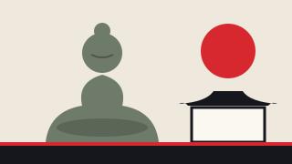

鎌倉
Kamakura
- Anreise
- JR Yokosuka-Linie direkt ab Tokyo Station, ca. 1 Std. Den aktuellen Fahrpreis zeigt die Fahrplanauskunft (JR East oder NAVITIME).
- Alternativ
- Odakyu «Enoshima-Kamakura Freepass» ab Shinjuku, mit Hin- und Rückfahrt und der Küstenbahn Enoden.
Die alte Samurai-Hauptstadt am Meer. Im Tempel Kotoku-in 高徳院 sitzt der Grosse Buddha, eine Bronzefigur aus dem 13. Jahrhundert (seit 1252) – gut 11 Meter hoch, mit Sockel rund 13 Meter. Du kannst sogar hineingehen.
Dazu kommen der Tempel Hasedera 長谷寺 mit Blick aufs Meer und der grosse Schrein Tsurugaoka Hachimangu 鶴岡八幡宮 (Eintritt frei).
Tipp: Kleingeld mitnehmen – viele Tempel nehmen keine Karten.